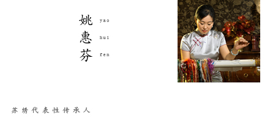

【产品描述】
此幅公爵夫人为苏绣中著名的“仿画绣”，“乱针绣”的技法将画理与绣理相结合，苏绣与西洋油画完美相融。在原画的基础上有了新的表现形式和艺术生命。
【产品描述】
此幅公爵夫人为苏绣中著名的“仿画绣”，“乱针绣”的技法将画理与绣理相结合，苏绣与西洋油画完美相融。在原画的基础上有了新的表现形式和艺术生命。
| 编号 | B129011 |
| 尺寸 | 长100*宽128(CM) |
| 材质 | 真丝底料 |
| 时间 | 2006年 |
| 工时 | 303天 |
| 技艺 | B129011 |
| 级别 | 国家级非物质文化遗产 |
| 传承人 | 姚惠芬 |
| 飞蚁价 | ￥1499999 |
| 市场价 |

姚惠芬，一代“针神”沈寿的第四代传人、新一代绣娘领军人物。 出生于苏州刺绣世家，自幼学习苏绣，从艺三十多年，精通各种刺绣技法，擅长人物肖像及中国写意水墨画的绣制。 从一九九一年至今，姚惠芬所创作的苏绣艺术精品几十次荣获省市及国家级工艺美术大奖，被誉为“苏绣传人”、“中华巧女”。 姚惠芬首创“简针绣”技法，创作出《素描少女肖像》、《葡萄少女肖像》以及《写意牡丹系列》、《写意花鸟系列》等一系列具有高度艺术性和创造性的刺绣作品。 其作品已被英国“大英博物馆”、“伦敦大学美术馆”等国内外多家博物馆、艺术馆及美国总统小布什、联合国教科文组织总干事博科娃等名人收藏。 yaohuifen.efeiyi.com